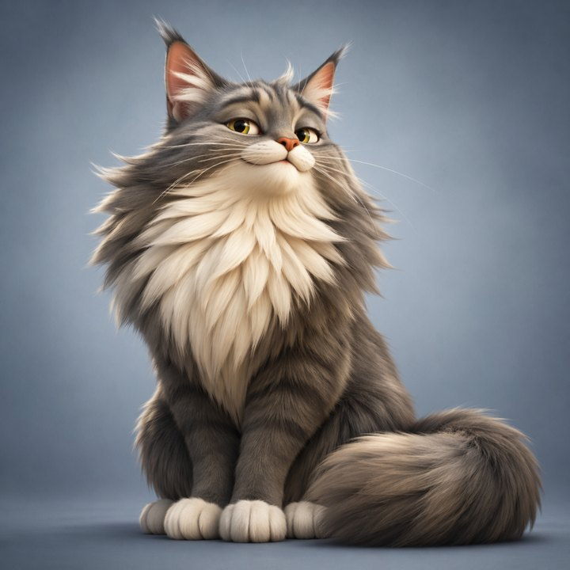
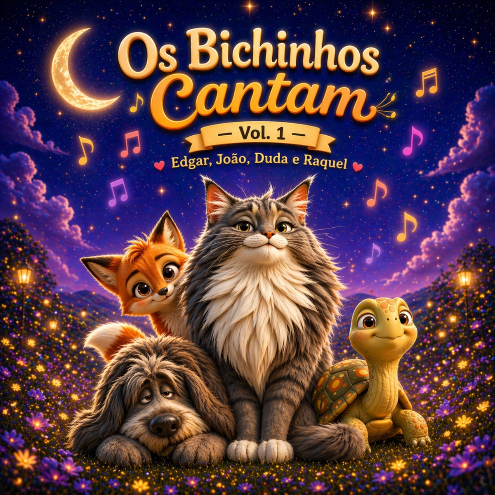
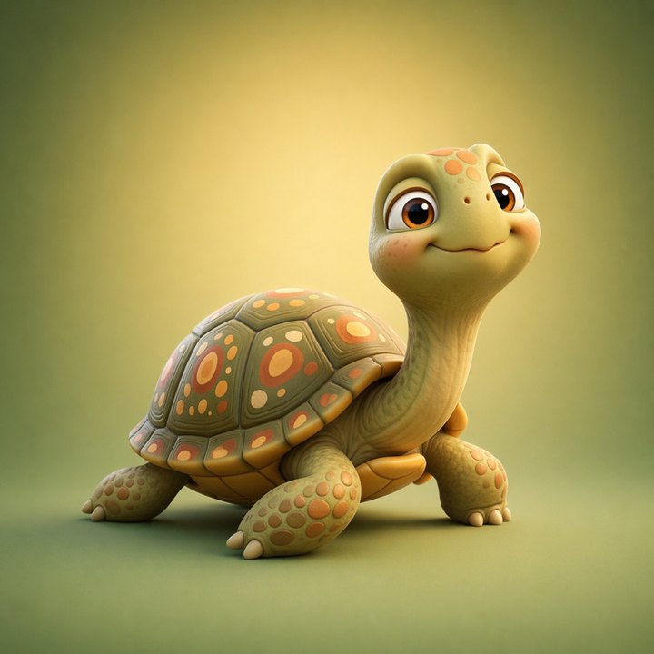
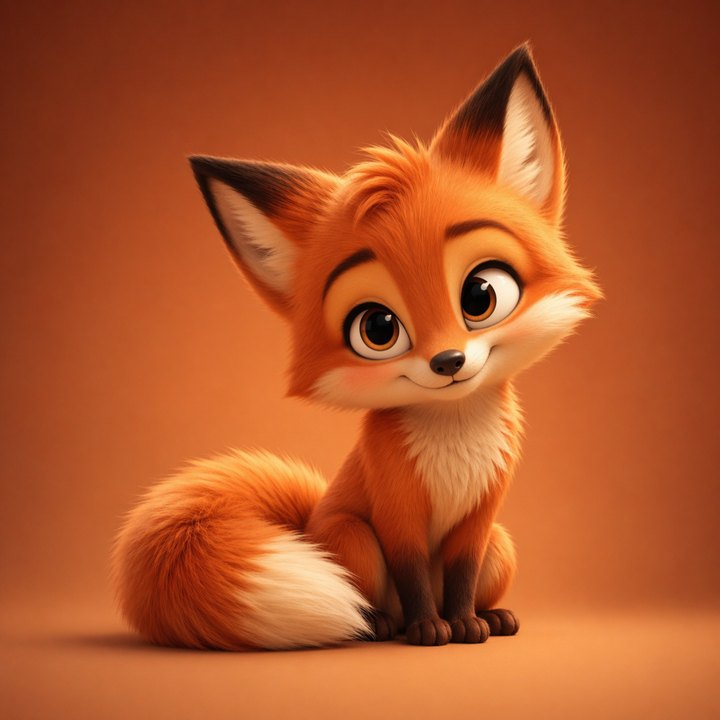

Edgar
Gato Maine Coon cinza-prateado, elegante, expressivo e orgulhoso.
Música infantil brasileira
Canções mágicas, lúdicas e familiares com Edgar, João, Duda e Raquel. Um universo musical acolhedor para crianças.
Vol. 1 • Edgar, João, Duda e Raquel

Projeto musical infantil
Os Bichinhos Cantam é um projeto brasileiro de música infantil criado para aproximar crianças de personagens carinhosos, histórias simples e canções com atmosfera alegre, segura e familiar.
Conheça a turma

Gato Maine Coon cinza-prateado, elegante, expressivo e orgulhoso.
Cachorro grande, peludo e sonolento, com jeito calmo e acolhedor.

Tartaruga serena, delicada e gentil, com presença tranquila.

Raposa vermelha-alaranjada, tímida, esperta e cheia de encanto.
Sobre o artista
O projeto combina canções infantis brasileiras com uma estética noturna, mágica e cinematográfica. A proposta é criar um universo reconhecível, centrado nos quatro personagens principais e em histórias musicais para crianças e famílias.
Links oficiais